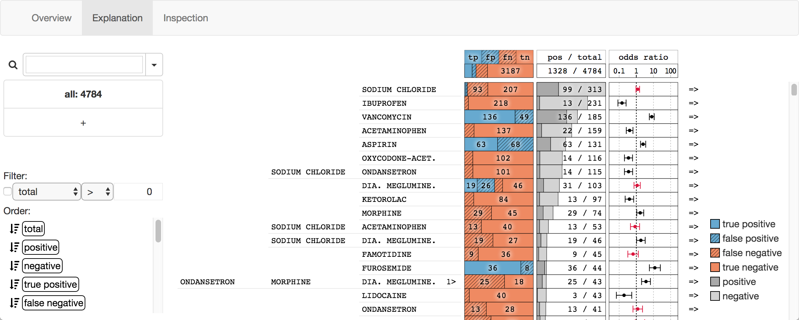

Human-in-the-loop data analysis applications necessitate greater transparency in machine learning models for experts to understand and trust their decisions. To this end, we propose a visual analytics workflow to help data scientists and domain experts explore, diagnose, and understand the decisions made by a binary classifier. The approach leverages “instance-level explanations”, measures of local feature relevance that explain single instances, and uses them to build a set of visual representations that guide the users in their investigation. The workflow is based on three main visual representations and steps: one based on aggregate statistics to see how data distributes across correct / incorrect decisions; one based on explanations to understand which features are used to make these decisions; and one based on raw data, to derive insights on potential root causes for the observed patterns. The workflow is derived from a long-term collaboration with a group of machine learning and healthcare professionals who used our method to make sense of machine learning models they developed. The case study from this collaboration demonstrates that the proposed workflow helps experts derive useful knowledge about the model and the phenomena it describes, thus experts can generate useful hypotheses on how a model can be improved.
@article{explainer17,
author={Krause, Josua and Dasgupta, Aritra and Swartz, Jordan and Aphinyanaphongs, Yindalon and Bertini, Enrico},
journal={Visual Analytics Science and Technology (VAST), {IEEE} Conference on},
title={A Workflow for Visual Diagnostics of Binary Classifiers using Instance-Level Explanations},
year={2017},
month={Oct}
}